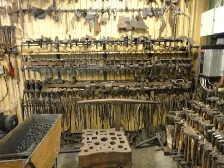
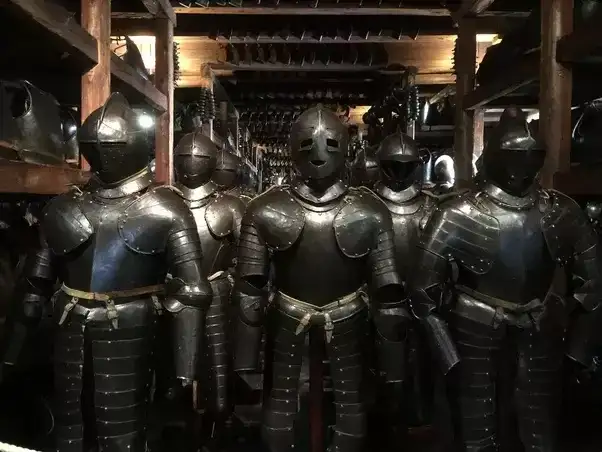
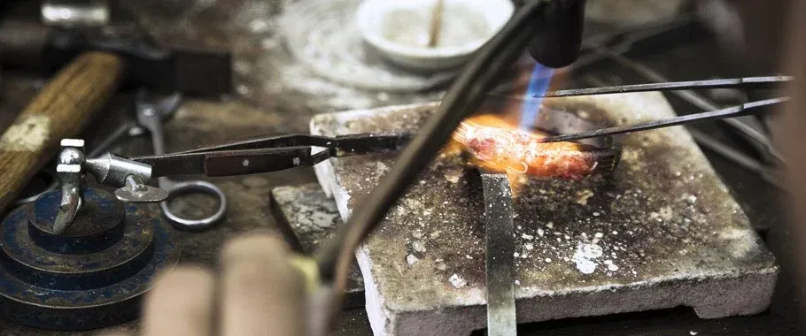

Types of products
Tools
Making tools is perhaps one of the first thing to practice for the beginner smith. With enough experience and a few tools you could start making your own tools, either for your own use or for sale.
Armor and weapons
The kind of products in this field vary greatly, depending on what your objective is. Like making a fictional piece of equipment or making hiscorically accurate and usable(in medieval fights for example) equpment. For armor you should define the weight and areas of body which it will protect as well as thickness of the metal parts. For weapons you should focus on damage type, whether it is slashing or blunt weapon, its weight and form to determine speed and ease of use.
Jewelry
Jewelry Smithing is a type of metal smithing that deals with small metals (usually copper, brass, silver and gold) used to make wearable items such as rings, bracelets, pendents, earrings, etc. The main difference between jewelry smithing and jewelry making is the use of fire to connect separate pieces of metal, add texture or forge a new shape from raw material.